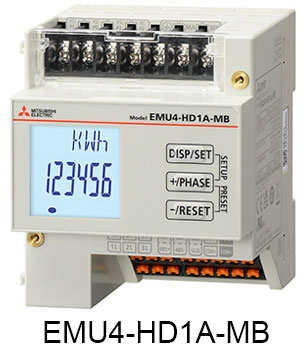
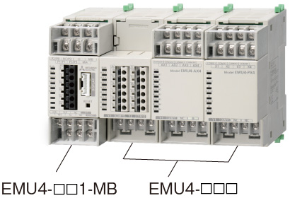
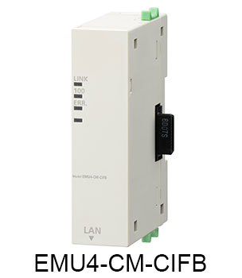

Network-related products |
Programmable Controllers MELSEC
CC-Link IE Field Basic Line Up

Energy Measuring Units
CC-Link IE Field Network Basic Energy Measuring Unit
Energy Measuring Unit EcoMonitorLight
- EcoMonitorLight enables CC-Link IE Field Network Basic communication when combined with the dedicated option unit
- Single circuit measuring device with an integrated display enabling setting and measuring of current, voltage, and power. Measured data can be utilized for energy-saving for individual equipment

Energy Measuring Unit EcoMonitorPlus
- EcoMonitorPlus enables CC-Link IE Field Network Basic communication when combined with the dedicated option unit
- Combination of basic unit and extension units according to measurement items support leakage current measurement and analog/pulse input in addition to current, voltage, and power measurement of multiple circuits

CC-Link IE Field Network Basic Communication Unit
- Measured energy data can be transmitted via CC-Link IE Field Network Basic communication when connected with EcoMonitorPlus and EcoMonitorLight
